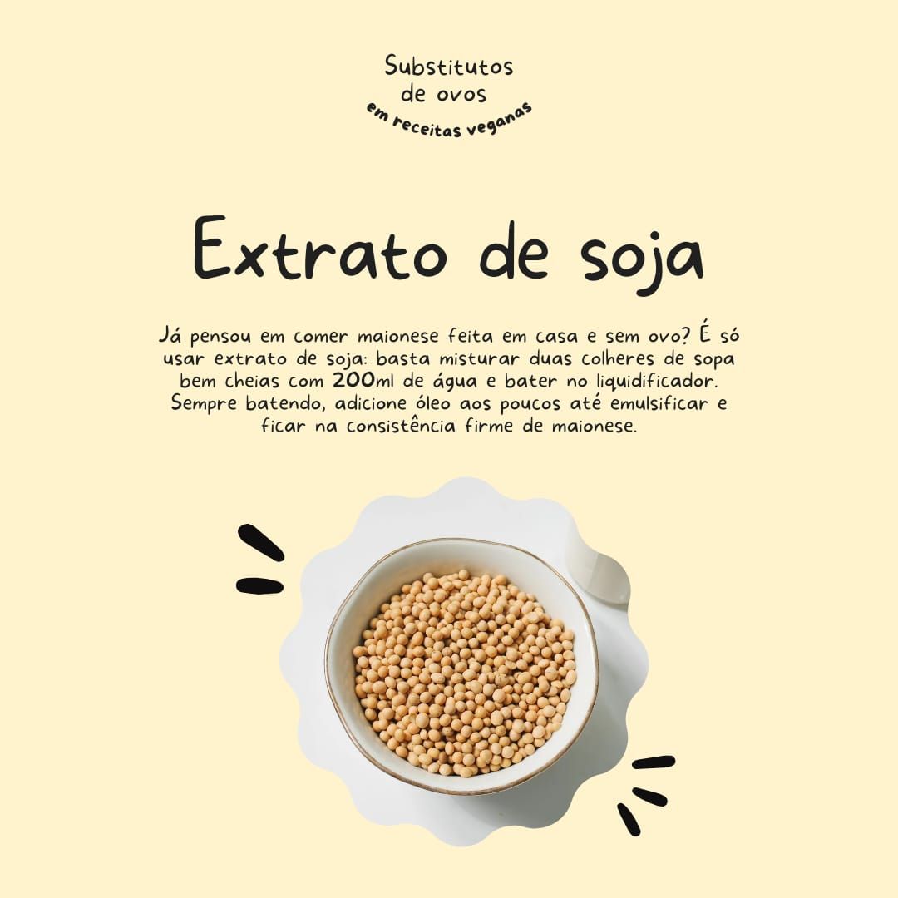
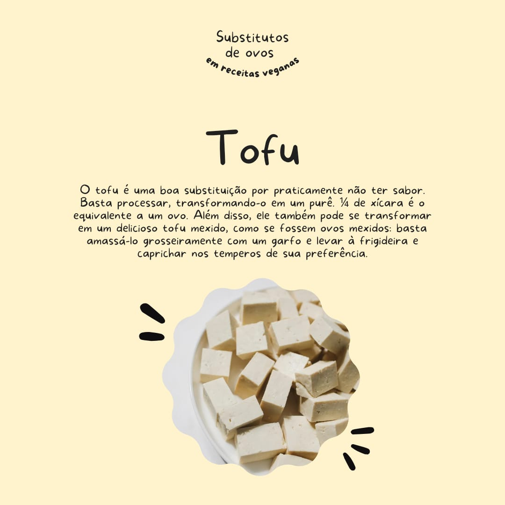
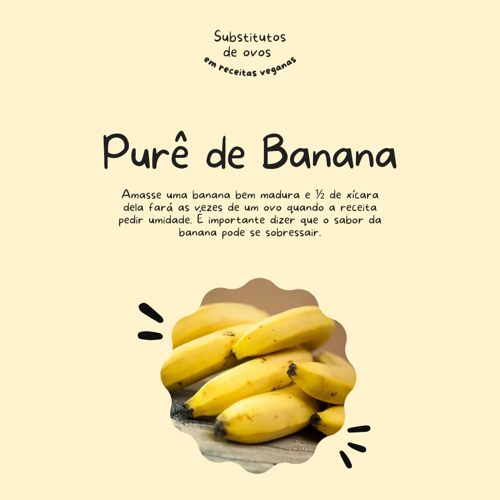
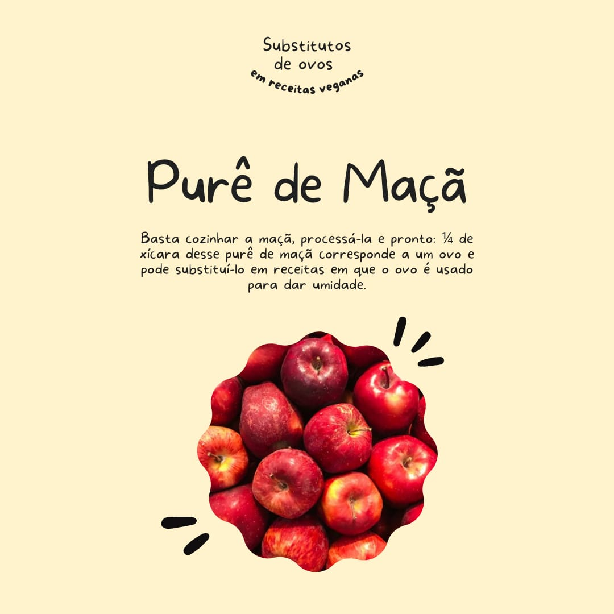
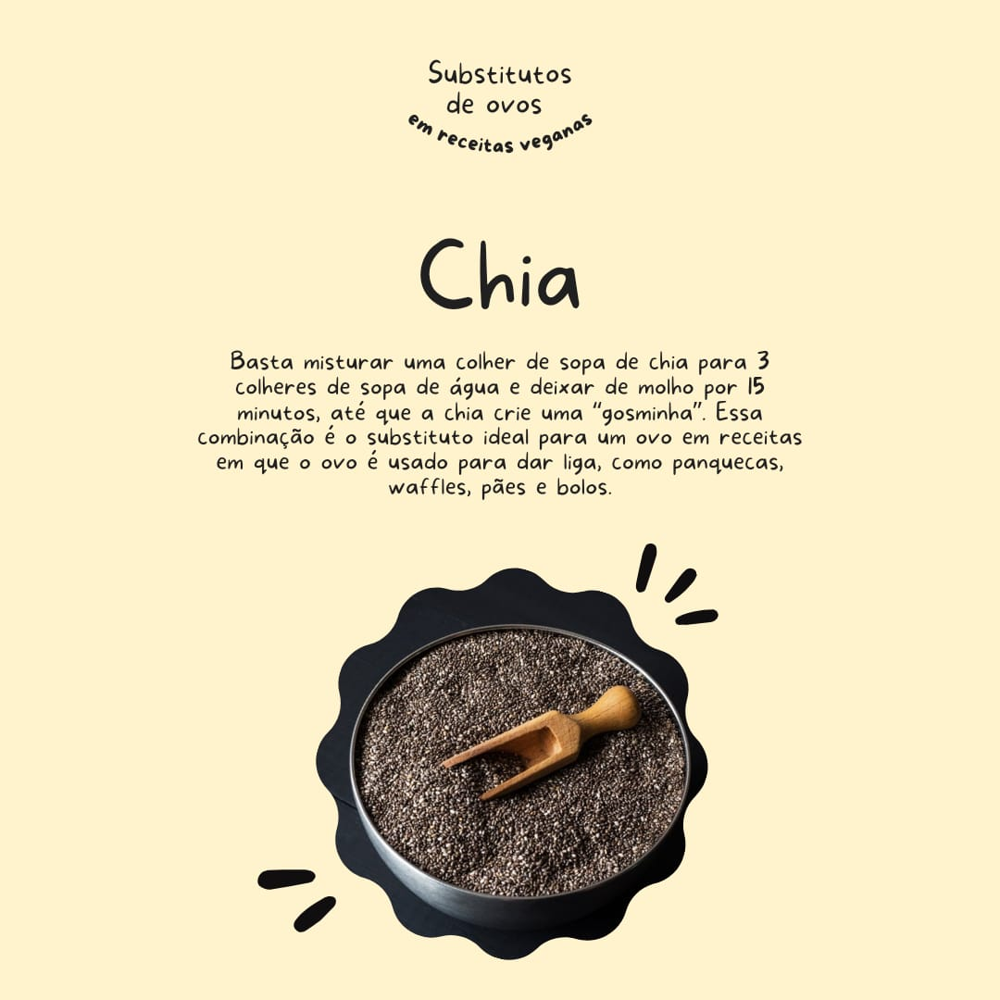

6 Substitutos Saudáveis para os Ovos nas Receitas
Seja por razões de saúde, dieta vegana, ou intolerância alimentar, substituir os ovos nas receitas é uma
necessidade para muitas pessoas. Felizmente, existem várias opções naturais que podem desempenhar o papel do
ovo, fornecendo textura e sabor sem comprometer a qualidade das receitas. Aqui estão seis ótimos
substitutos:
1. Extrato de soja
Misture extrato de soja com água para criar uma textura semelhante à clara de ovo. Esse substituto é ótimo
para bolos, tortas e biscoitos, proporcionando liga e estrutura.
2. Tofu
Ideal para pratos salgados como quiches, omeletes e molhos. O tofu é rico em proteínas e tem uma textura
cremosa que substitui bem os ovos.
3. Purê de abóbora
Adiciona umidade e um sabor suave às receitas de bolos e pães. Ele combina bem com especiarias como canela e
noz-moscada.
4. Purê de banana
Adiciona doçura natural e umidade a bolos, muffins e brownies. Use 1/4 de xícara de banana amassada para
substituir um ovo.
5. Purê de maçã
Substituto excelente em sobremesas, trazendo doçura e umidade. É baixo em calorias e rico em fibras,
deixando as receitas mais leves.
6. Sementes de linhaça
Misture 1 colher de sopa de linhaça moída com 3 colheres de sopa de água para formar um gel semelhante ao
ovo. Rico em ômega-3 e fibras, é perfeito para panquecas, waffles e pães.
7. Chia
Para substituir um ovo, misture 1 colher de sopa de sementes de chia com 3 colheres de sopa de água,
deixando descansar por cerca de 5 minutos até formar o gel.
Dicas de uso:
Para receitas doces: o purê de abóbora é uma escolha excelente.
Para umidade e sabor: purês de frutas, como banana e maçã, são ideais.
Para liga e estrutura: tofu, linhaça e extrato de soja são as melhores opções.
Essas alternativas são fáceis de usar e trazem benefícios nutricionais, além de serem opções saudáveis para
a sua dieta.
Blog da Sarah Rosner




